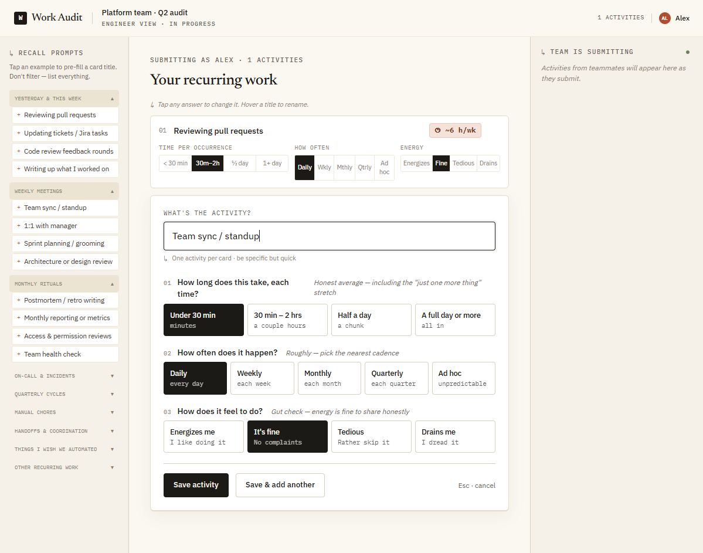
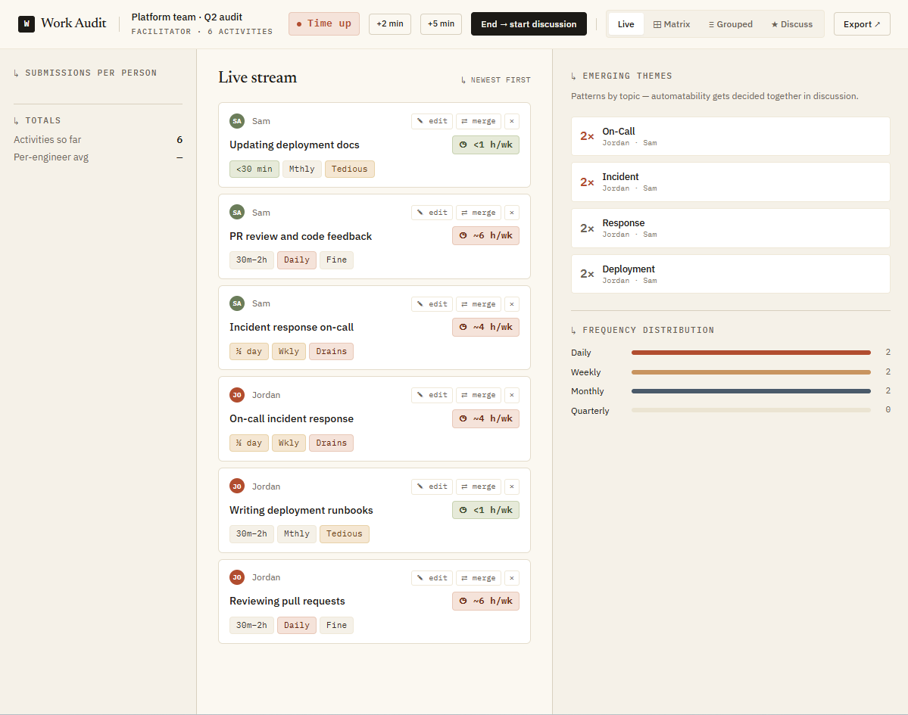
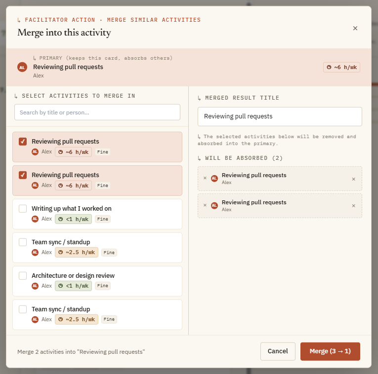
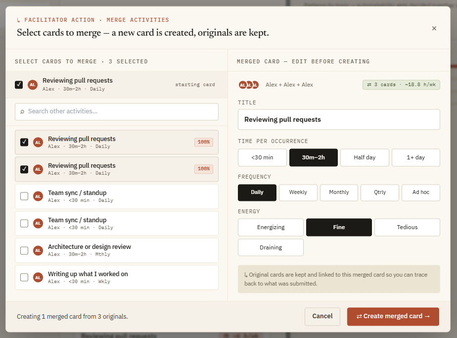

Your Spec Needs Two Things. The Rest Your Codebase Already Knows.
Nine experiments in spec-driven development — what we learned about what to write, what to skip, and why your codebase is already doing most of the work.
Everyone is telling you to write a spec.
Thoughtworks put spec-driven development on their radar. GitHub shipped Spec Kit. AWS shipped Kiro. The consensus is clear: write a detailed spec, treat it as the source of truth, generate code from it.
What's missing from all of it is experimental evidence. Which parts of a spec actually produce correct implementations? Which parts does the model figure out on its own? What's the minimum you can write and still ship something?
We had the same question. So we ran the experiments.
Whatever you put in the spec, the LLM follows. Everything else it infers from your codebase. The minimum viable spec is whatever you care about most — business rules are the floor.
Here's how we got there.
What We Built
The application: a Toil Tracker (toil: SRE term for repetitive, manual work that's ripe for automation) — a real-time collaborative retrospective tool where engineers log recurring work and a facilitator identifies automation targets. Multi-user, distinct roles, WebSocket-driven, with a full facilitation workflow.


We chose it deliberately. Complex enough to have real design decisions. Not a todo app — LLMs have memorized thousands of those. We needed the model to rely on our spec and our codebase, not its training data.
For the integration experiments, we focused on one feature: merge. The facilitator can combine similar activities submitted by different engineers into a single consolidated card.
This feature had everything needed for a meaningful test:
- Specific business logic — a Jaccard similarity formula with exact weights (85% title / 10% frequency / 5% time-per-occurrence), an 8-character UUID for the merged result, a
teamAutofield that always resets tounclassified - Cross-cutting visibility rules — merged source cards hidden from facilitator views, preserved in engineer boards and the export
- Non-trivial UI — a two-column modal, similarity badges keyed to score thresholds, avatar stacks showing contributing engineers
- Five integration points — the live view, matrix view, grouped view, discussion view, and export all needed to handle merged activities correctly
How We Got to the Right Question
The research ran through three phases.
You cannot close the gap through spec detail alone. At 83K tokens, variance still persists. The spec is not your only source of truth. The codebase is one too.
That reframed the question. We already had a working application — a codebase that was itself a source of truth for conventions, patterns, and structure. So we shifted the experiment: take the existing app, introduce a single new feature, and ask which parts of the spec actually drive correctness when the codebase is already doing half the work.
The Ablation Study: What Breaks When You Remove It
We took the reference application, stripped out the merge feature, and rebuilt it five times — each run with the full spec minus one category.
| Category removed | Unique functional bugs | Also observed |
|---|---|---|
| None (baseline) | 0 | — |
| Business rules | 4 | — |
| UI guidance | 0 | Visual inconsistency, layout drift |
| Data layer | 0 | Field name drift |
| Technical interfaces | 0 | Socket & API name drift |
Business rules are categorically different from everything else.
Removing them produced four unique functional bugs:
- The similarity formula was invented — different algorithm, different weights
- Merged source cards appeared in facilitator views where they should be hidden
- The merged result ID was formatted differently
- Cross-view filtering was inconsistent across the live, matrix, and grouped views
Removing any other category? Zero unique functional bugs. Only visual divergence or naming drift.
The codebase carries enormous implicit specification. Naming conventions, socket event patterns, component structure, TypeScript idioms, design tokens — the LLM reads the existing code and conforms to all of it. When you remove the data layer spec, it invents field names that follow your conventions. When you remove the technical interfaces spec, it invents socket event names that match your patterns. The behavior is correct. The names drift slightly.
But no amount of codebase reading tells the model that title similarity should be weighted at 85%, or that merged sources should be hidden from facilitator views but preserved on engineer boards.
The codebase is also a source of truth — for a different class of information. The spec's job is to cover only what the codebase can't.
That said, there's no restriction on specifying technical patterns. If a naming convention, an architectural constraint, or a specific implementation approach matters to you — include it. The spec will follow whatever you write. The point is that leaving those details out is low-risk, not catastrophic: the model will read the codebase, infer the conventions, and produce something functionally correct. The deviation, if any, lands in names and structure rather than behavior.
The Additive Study: Where Quality Crosses the Threshold
We flipped the experiment. Start with almost nothing; add one spec layer at a time.
| Run | Spec provided | Result |
|---|---|---|
| 9.1 | 2-sentence problem statement | Working but incomplete |
| 9.2 | + business rules | Functionally correct ✓ |
| 9.3 | + UI guidance | Visually consistent |
| 9.4 | + data layer | Exact field names |
| 9.5 | + technical interfaces | Exact socket/REST names |
9.1 — Problem statement only. A working merge feature — respecting the design system, using existing components, following socket patterns. But the modal let you edit only the title of the consolidated card. Time, frequency, and energy fields were missing. The agent didn't think of them without being asked.
9.2 — Plus business rules (the largest jump). The full card editor arrived: time estimate, frequency, and energy fields were now adjustable — not just the title. The business rules told the model these fields were part of the card's definition and needed to be editable. Also correct: the Jaccard similarity formula, view filtering, and teamAuto reset. Cross-view behavior correct across all views. The feature was ship-worthy. Business rules alone crossed the functional correctness threshold.
9.3 — Plus UI guidance. Visual consistency locked in — exact modal text, badge colors, two-column layout, button order. Outputs 9.3 through 9.5 were nearly indistinguishable in user testing.
9.4 and 9.5 — Precision only. Exact field names. Exact socket event names. Neither changed the visible quality of the feature — only its interoperability with external systems.


The inversion
Here's what we didn't expect.
Output 9.2 — business rules only, no data model spec — produced the richest source card display. It showed full card details for each merged source: title, time estimate, frequency, energy, submitting engineer.
Outputs 9.3 and 9.4, constrained by the explicit field names in the data model spec (mergedFromNames, mergedFromInitials, mergedFromColors), showed only what those fields carried — names and avatars. Nothing more.
More specification produced a narrower solution. Less gives the model room to experiment.
Spec should describe outcomes, not implementation details — unless the implementation detail is itself the requirement.
The practical implication: a looser spec gives the model room to explore. The first version you get will be richer — and may propose solutions you hadn't considered — though you'll likely need to iterate toward your exact vision. A tighter spec produces a more predictable first pass, closer to what you had in mind, but with less room for the model to surprise you. The calibration worth learning: be specific on the things that must be exactly right. On the things you're uncertain about, describe the outcome you want rather than the implementation. The model will fill the space — and sometimes it fills it better than you would have prescribed.
The Practical Framework
One question to ask about every element before you write it into the spec:
Does this have a specific correct answer that isn't already in my codebase?
If yes, write it. If no, the LLM will infer it.
When to specify what
| Spec layer | Write it when… | Skip it when… |
|---|---|---|
| Business rules | It has a formula, threshold, or visibility rule | Invest here as much as possible — there is no skip |
| UI guidance | Visual consistency matters across iterations | You're on v1 and plan to iterate on the design |
| Data layer | Other systems consume your data | It's internal and field names aren't a contract |
| Technical interfaces | External systems depend on your API contracts | It's an internal implementation detail |
The two-phase workflow
Rules of Thumb
-
Rule 1
Write business rules. Always.
If a spec element has a formula, threshold, weight, or visibility rule — write it. The LLM cannot infer specific correct values from codebase patterns. -
Rule 2
Your codebase is already a spec.
The LLM reads your code and conforms to it. Spec only needs to cover what isn't already there. The richer the codebase, the less you need to write per feature. -
Rule 3
Specify what you care about — business rules are the floor.
Add UI guidance when visual consistency matters. Add precision specs when external systems need to interoperate. The LLM handles everything else. -
Rule 4
Specify outcomes — leave mechanisms open unless they're the requirement.
The issue isn't how much you spec; it's what you spec. Outcomes give the model freedom to find the best implementation. Mechanisms — field names, data structures, implementation details — constrain what it can propose. Constraining field names also constrains what can be displayed. -
Rule 5
You can iterate before, after, or both — know the trade-off.
Heavy upfront iteration on the design and spec produces a stronger first implementation and pays off when you know what you want. A looser spec leaves the model room to explore, with iteration happening on the output instead. Both are valid. Most projects use some of each. As a rough guide: early on, when the problem is complex and the first pass sets the direction, invest more in the spec. Later, when you're iterating on an established codebase, a looser spec with more post-implementation adjustment becomes more practical.
Closing
Everyone says write a detailed spec.
The evidence says write a precise spec — precise about the right things.
The "spec as source of truth" framing isn't wrong, it's incomplete. The spec is the source of truth for business logic and UI decisions. The codebase is the source of truth for technical patterns. Both are authoritative. They cover different things.
The most durable insight from nine experiments: spec-driven development is an iterative practice, not a one-shot generator. The value of a good spec isn't eliminating iteration — it's ensuring the important things are right in the first pass, so the iterations you do are on the right problems.